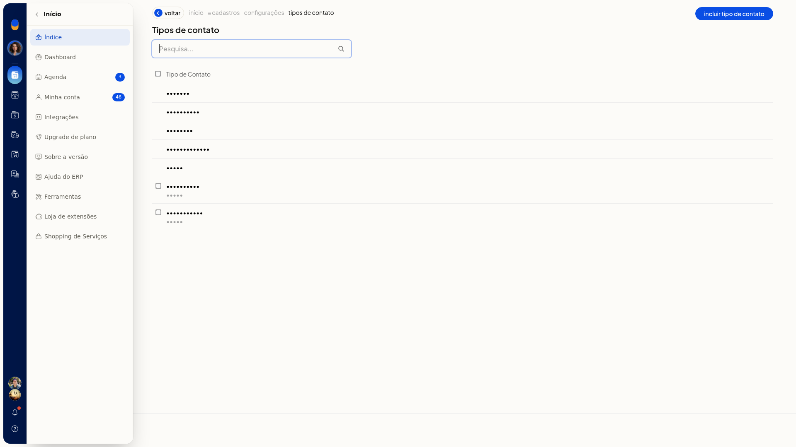
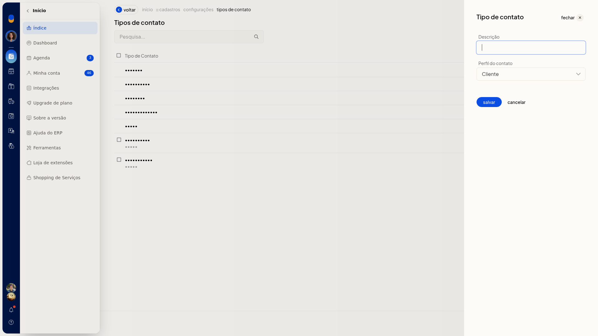
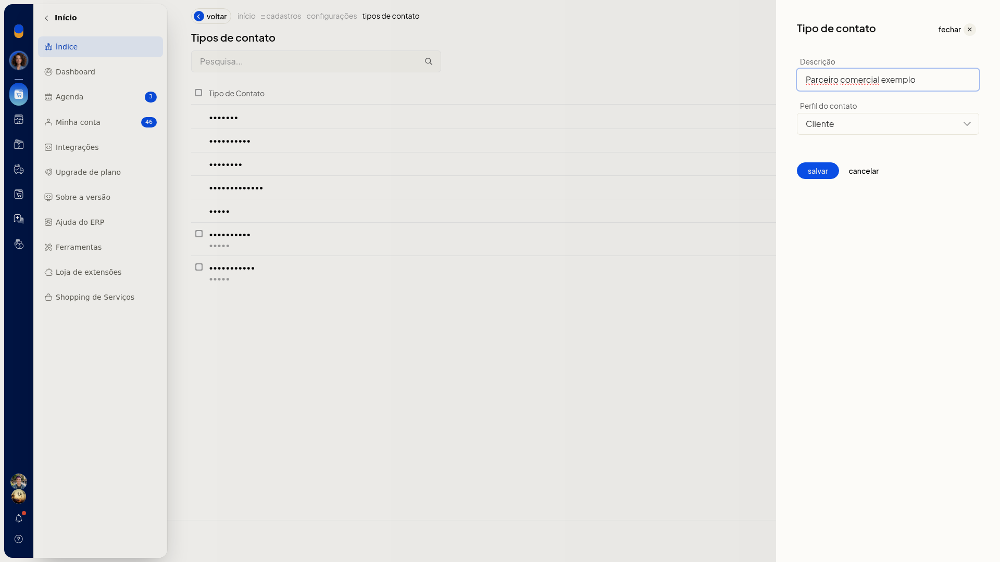

Incluir um tipo de contato
No ERP da Olist, o tipo de contato classifica pessoas e empresas com as quais a loja se relaciona. Você inclui um tipo com descrição e perfil para usá-lo nas abas da lista de contatos e como tipo de contato padrão.
Instruções
-
Acesse Configurações > Configurações ERP > Cadastros > Tipos de contato.

-
Clique em Incluir tipo de contato.

-
Preencha Descrição. O campo não é obrigatório.
-
Selecione Perfil do contato. As opções são Cliente, Fornecedor, Vendedor, Transportador, Funcionário e Outro. Ao abrir o painel, a opção selecionada é Cliente.

-
Clique em salvar para gravar o tipo de contato. Cancelar fecha o painel e volta à lista sem incluir o tipo.
Informações adicionais
Tipos padrão e personalizados na lista
- Cliente, Fornecedor, Vendedor, Transportador e Outro aparecem sem caixa de seleção.
- Tipos personalizados, como Agricultor e Funcionário, aparecem com caixa de seleção e o subtítulo Outro.
- O tipo criado em Tipos de contato passa a aparecer nas abas da lista de Clientes e Fornecedores e em Tipo de contato padrão.